← Index · ← Previous · Next →
Authors: Graham Van Goffrier, Debasish Banerjee, Bipasha Chakraborty, Emilie Huffman
Type: both · Category: quantum information and computing · PDF: https://arxiv.org/pdf/2608.27457v1
Analysis basis: full PDF text, analyzed in chunks
Topic relevance: QC/QI experiment 3/5 · analog quantum simulation 3/5 · quantum measurements 2/5
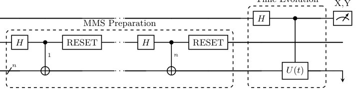
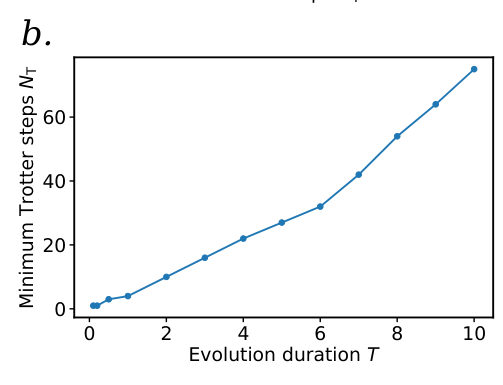
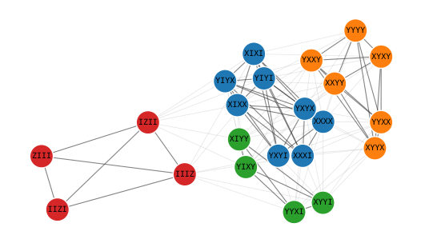
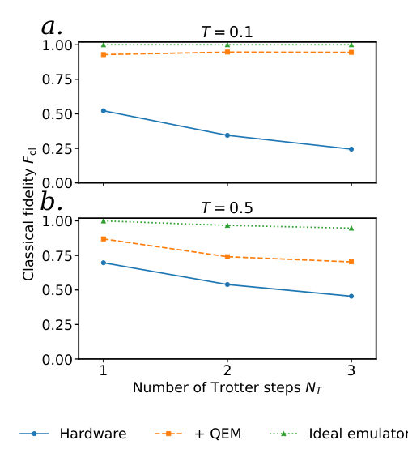
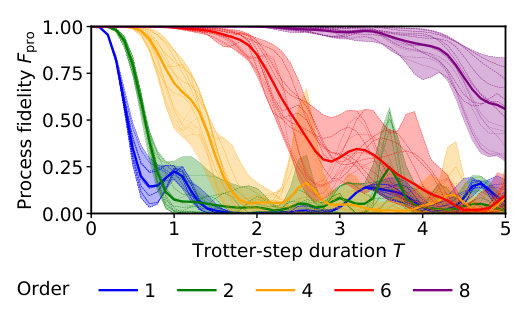
Summary. This paper presents a quantum algorithm, Maximally Mixed State (MMS) spectral sampling, to extract the full density of states from a quantum Hamiltonian by measuring its time evolution. The technique is demonstrated on a non-Abelian $ ext{SO}(3)$ gauge theory, showing its feasibility on near-term quantum hardware. It provides a powerful, unbiased tool for probing diverse physical regimes, from ground state physics to thermalization, using quantum signal processing.
Why it may be interesting. This work directly addresses the computational bottleneck of characterizing complex quantum Hamiltonians by proposing a time-series quantum algorithm that bypasses the need for full eigenstate preparation, making it highly relevant for simulating strongly correlated systems.
Main problem. The primary goal is to extract the full spectral distribution of a quantum many-body Hamiltonian, which contains crucial information about ground state properties, thermalization, and quantum criticality.
Main result. The authors demonstrate that the Maximally Mixed State (MMS) spectral sampling protocol can be successfully applied to an interacting lattice gauge theory, showing feasibility on near-term superconducting quantum hardware.
Method. The core method is MMS spectral sampling, which measures the characteristic function $ ext{Tr}[ ho_{ ext{MMS}} e^{-iHt}]$ via controlled quantum evolution circuits, followed by a Fourier transform to yield the density of states.
Model / system. The technique is applied to a $(1+1)$d non-Abelian $ ext{SO}(3)$ gauge theory (the $ ext{SO}(3)$ Quantum Link Model coupled to staggered fermions). The general framework applies to any system whose Hamiltonian $H$ can be mapped to a quantum circuit.
Key observables. Density of States ($\varrho_H(E)$), low-lying energies (for quantum criticality), and mid-spectrum features (for thermalization behavior).
Important parameters / regimes. The spectral resolution is limited by the total evolution time $T$; the circuit depth was demonstrated to be manageable (e.g., 78 two-qubit gates deep).
Assumptions / limitations. The output is a finite-resolution spectral distribution, not an exact listing of all eigenvalues. The method relies on the availability of mid-circuit measurement and reset for qubit optimization.
Figures summary. Figure 14 illustrates the Pauli-frame-optimized controlled-Trotter step for the $ ext{SO}(3)$ QLM, and Figure 15 compares the effect of using a Hann window versus a rectangular window in the post-processing Fourier transform.
Paper structure. The paper introduces the MMS protocol for spectral sampling, details the necessary quantum circuit compilation (including Pauli-frame optimizations), applies this technique to the $ ext{SO}(3)$ QLM, and discusses the interpretation of the resulting spectral fingerprints for various physical phenomena.
Maximally mixed state spectral sampling is an unbiased quantum algorithm that allows for extraction of a finite-resolution spectral distribution from a Hamiltonian over potentially the entire allowed range of energies. We show how it may be focused on any desired area of the spectrum in order to learn about the full \textit{fingerprint} of the model of interest: from its ground state phenomena such as quantum criticality, obtained from the lowest lying energies, to its thermalization behavior, obtained from the mid-spectrum. We demonstrate this technique specifically on a $(1+1)d$ non-Abelian $SO(3)$ gauge theory, providing a comprehensive analysis of the steps necessary for performing this algorithm, as well as what is possible in the near-term with superconducting quantum hardware, performing simulations with circuits that are $78$ two-qubit gates deep. We show how this algorithm is able to take advantage of emerging dynamical circuit capabilities in near-term hardware to roughly halve the number required qubits, as well as how quantum readout error mitigation is trivial for this method. Along the way, we propose a novel strategy for compiling the controlled-time evolutions needed for spectral sampling by means of Pauli-frame optimizations. We illustrate two physical applications of quantum spectral sampling -- disordered many-body transitions, and mid-spectrum densities of states -- and what postprocessing steps they require beyond the Fourier outputs of the algorithm.
Authors: Jonas Junker
Type: theory · Category: other · PDF: https://arxiv.org/pdf/2608.26938v1
Analysis basis: full PDF text, analyzed in chunks
Topic relevance: quantum measurements 3/5 · analog quantum simulation 1/5 · driven-dissipative phase transition 1/5 · interference shaping light 1/5 · quantum optics experiment 1/5
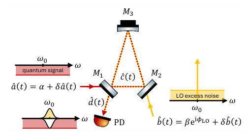
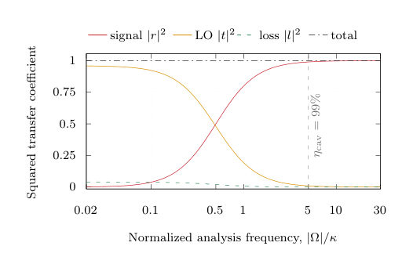
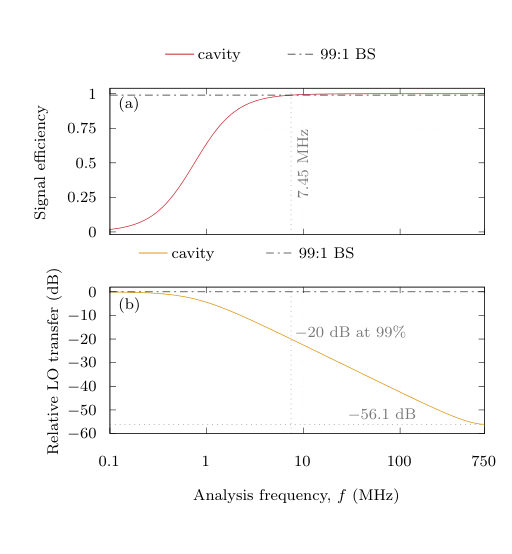
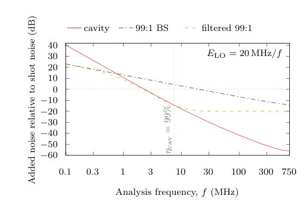
Summary. This paper introduces cavity-assisted homodyne detection as an advanced technique for measuring quantum quadratures at high frequencies. By coupling the signal and local oscillator through a resonant cavity, it overcomes the need for perfectly matched photodetection channels required by standard methods. The resulting setup offers high signal efficiency and superior suppression of technical noise sidebands using only a single photodiode.
Why it may be interesting. This work provides a detailed theoretical framework for implementing high-bandwidth quantum measurements using cavity QED principles, which is highly relevant for open quantum systems and quantum optics.
Main problem. Measuring quadrature components of high-frequency squeezed states is challenging, especially at gigahertz frequencies, due to limitations in standard detection methods.
Main result. Cavity-assisted homodyne detection achieves near-unity signal-transfer efficiency at moderate LO power while effectively suppressing technical LO noise sidebands.
Method. The authors derive quantum input-output relations for a traveling-wave cavity where the signal and LO interact, leading to a single-photodiode readout.
Model / system. The system uses an impedance-matched traveling-wave ring cavity where the quantum signal enters one port and the LO enters a separate port. The detection relies on the LO carrier beating with off-resonant signal sidebands reflected from the cavity.
Key observables. The photocurrent $\delta \hat{I}(\Omega)$ and the signal-transfer efficiency $\eta_{ ext{cav}}(\Omega)$.
Important parameters / regimes. Cavity linewidth ($\kappa$), Free Spectral Range (FSR), and the ratio of LO power to signal power.
Assumptions / limitations. The analysis assumes the detected LO carrier amplitude dominates the residual signal carrier amplitude, and the cavity is impedance-matched.
Figures summary. Figure 1 illustrates the concept of signal and LO entering separate ports of the cavity, resulting in the detected field. Figure 2 shows the partitioning of the unit transfer coefficients ($\eta_{ ext{cav}}$, $|t|^2$, $|l|^2$).
Paper structure. The paper first establishes the limitations of BHD, then proposes the cavity-assisted setup, deriving the input-output relations. Subsequent sections analyze the noise suppression and compare the single-photodiode readout against alternative methods like beam-splitter readouts.
High-frequency squeezed states are important for quantum metrology and information processing, but quadrature measurements at gigahertz frequencies remain challenging. Balanced homodyne detection (BHD), the standard approach, requires closely matched complex transfer functions in both photodetection channels to suppress local-oscillator (LO) noise and maintain a well-defined readout quadrature. This matching becomes increasingly difficult at high bandwidths. Strongly asymmetric single-photodiode homodyne detection avoids this requirement, but achieving high signal efficiency and shot-noise clearance typically requires hundreds of milliwatts of LO power and does not suppress technical LO sidebands. I propose cavity-assisted homodyne detection, in which the quantum field and LO enter separate ports of an impedance-matched traveling-wave cavity. The resonant LO carrier is transmitted to the photodetector, where it beats with off-resonant signal sidebands reflected from the cavity. At the same time, technical LO sidebands outside the cavity linewidth are suppressed. I derive the quantum input-output relations and linearized photocurrent including intracavity loss, and show that near-unity signal-transfer efficiency can be achieved at moderate incident LO power. The cavity linewidth and free spectral range determine the usable detection band.
Authors: Ady Stern, Felix von Oppen
Type: theory · Category: other · PDF: https://arxiv.org/pdf/2608.26269v1
Analysis basis: full PDF text, analyzed in chunks
Topic relevance: analog quantum simulation 3/5 · Keldysh / 2PI / non-Gaussian methods 2/5 · methods for driven-dissipative 1/5 · quantum measurements 1/5
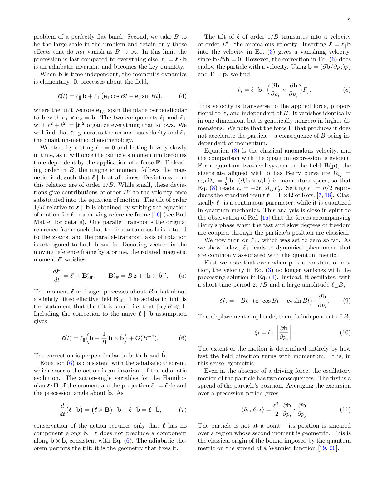
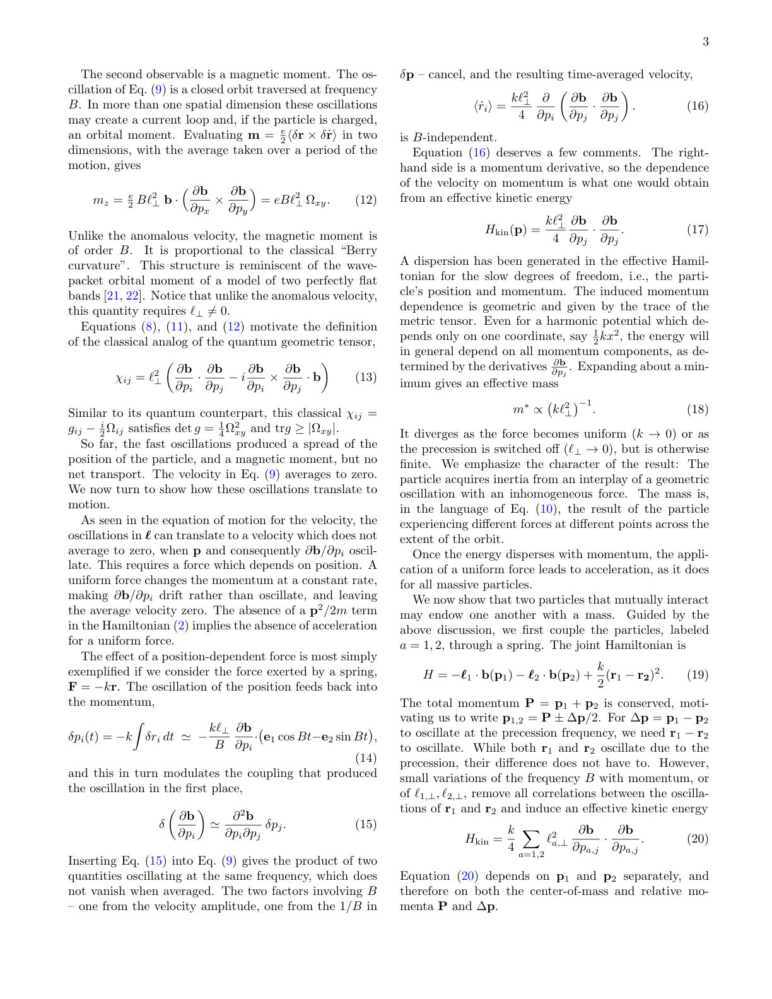
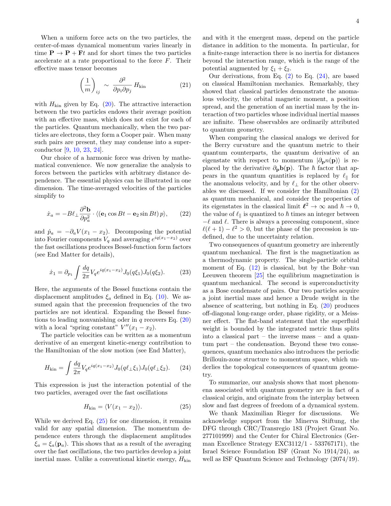
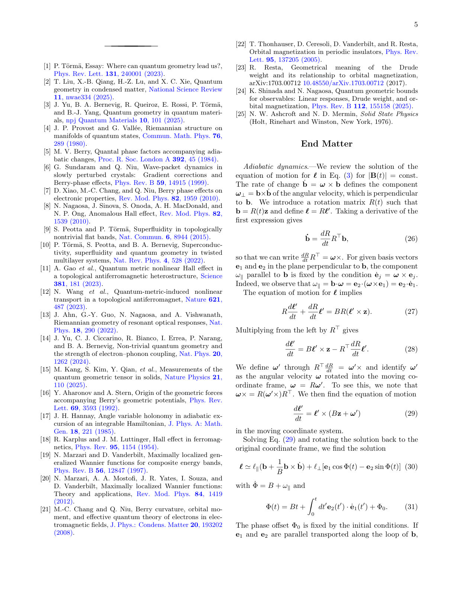
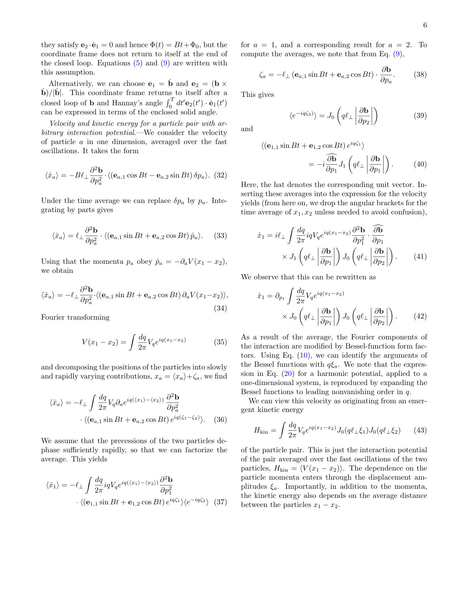
Summary. This paper explores the quantum geometric tensor by studying a classical model of a precessing magnetic moment. It demonstrates that several key quantum phenomena, such as anomalous velocity and emergent mass, have direct classical analogues arising from the interplay between fast and slow degrees of freedom. This suggests that the quantum nature of these effects might be less fundamental than previously thought for certain observables.
Why it may be interesting. It provides a powerful theoretical tool for distinguishing between genuinely quantum effects and those that can be captured by semi-classical or classical descriptions, which is crucial for interpreting experimental results in condensed matter.
Main problem. The paper investigates whether the physical phenomena associated with 'quantum geometry' (like anomalous Hall effects or superfluid weights) fundamentally require quantum mechanics by analyzing a purely classical analogue.
Main result. Most key observables associated with quantum geometry, including anomalous velocity, orbital magnetic moment, and emergent inertial mass, can be reproduced by analyzing the dynamics of a classical particle system.
Method. The analysis uses Hamiltonian classical mechanics, employing the adiabatic approximation to separate fast precession dynamics from slow particle motion, and calculating time-averaged quantities.
Model / system. The model is a point particle carrying a classical magnetic moment $\boldsymbol{\ell}$ that precesses in a momentum-dependent magnetic field $\mathbf{B}(\mathbf{p})$. The analysis is generalized to include two interacting particles coupled by a spring potential.
Key observables. Anomalous velocity, position spread (metric), orbital magnetic moment, and emergent inertial mass/Drude weight.
Important parameters / regimes. The magnetic moment $\boldsymbol{\ell}$, the coupling constant $k$, and the characteristic precession frequency $B$.
Assumptions / limitations. The analysis relies on the adiabatic approximation (fast precession relative to slow dynamics) and the ability to average over fast oscillations.
Figures summary. Not specified.
Paper structure. The paper first establishes the classical analog of the quantum geometric tensor using a single particle. It then extends the analysis to two interacting particles, deriving an effective kinetic energy and showing how emergent mass arises from the interaction averaged over fast oscillations.
The quantum geometric tensor - the Berry curvature together with the quantum metric - now underlies a long list of observables, from the anomalous Hall effect to the superfluid weight of a flat band. We ask which of these observables actually require quantum mechanics. To answer this question, we study a purely classical system: a point particle carrying a classical magnetic moment $\boldsymbol{\ell}$ that precesses in a momentum-dependent magnetic field $\mathbf{B}(\mathbf{p})$. Within Hamiltonian classical mechanics, the component of $\boldsymbol{\ell}$ along the field reproduces the Berry-curvature phenomena, while its precessing transverse component reproduces the quantum-metric phenomena. The particle acquires a position spread whose second moment is the metric, an orbital magnetic moment, and - most strikingly - an inertial mass generated by a position-dependent force, and with it a nonzero Drude weight in a system that is nominally dispersionless.
Authors: Daniel T. Möller, Baha Sakar, Ekrem T. Güldeste, Dhruv Wadhwani, Olt Gashi, Daniel A. García Vaca, Mokessh K. Ciwan, Simone P. Crozier, Christian Laube, Sirswa K. Shree Ram, Matteo Slaviero, Nabeel Aslam
Type: experiment · Category: other · PDF: https://arxiv.org/pdf/2608.26942v1
Analysis basis: full PDF text, analyzed in chunks
Topic relevance: QC/QI experiment 3/5 · quantum measurements 2/5 · quantum optics experiment 2/5
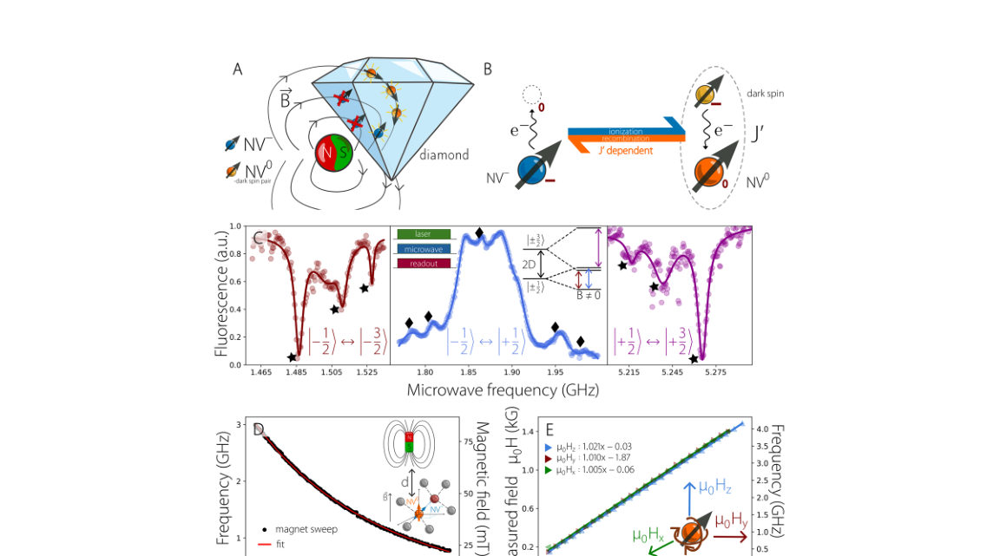
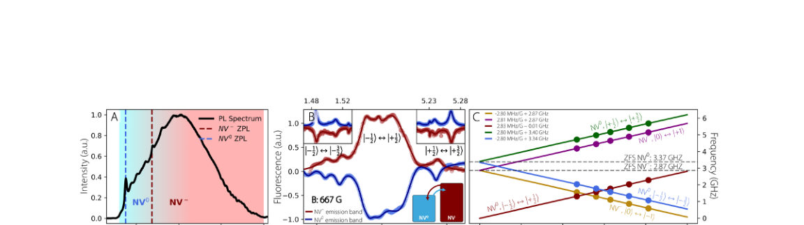
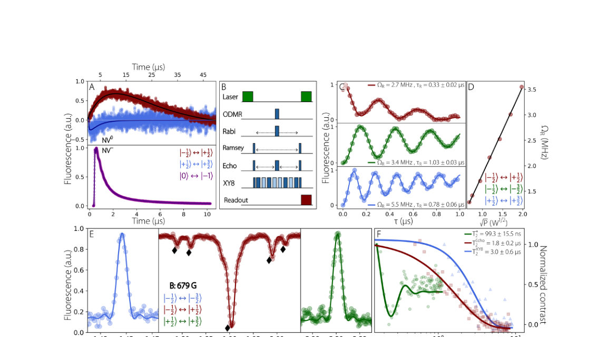
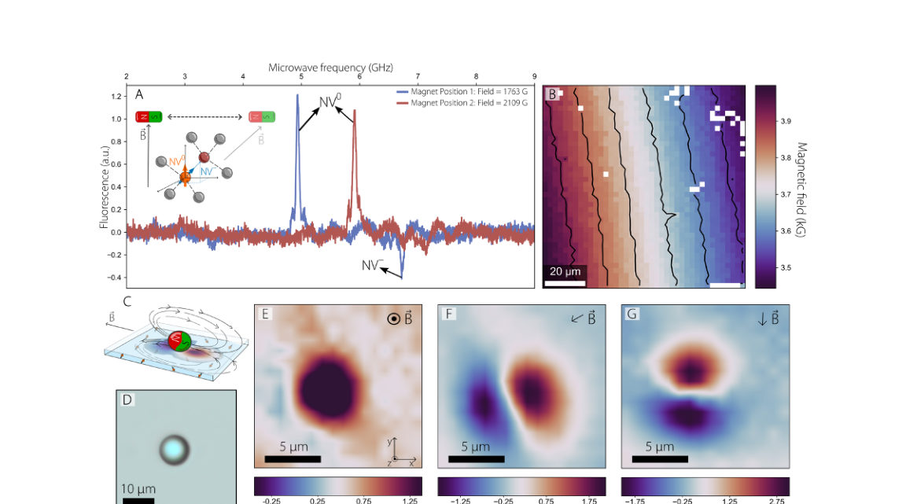
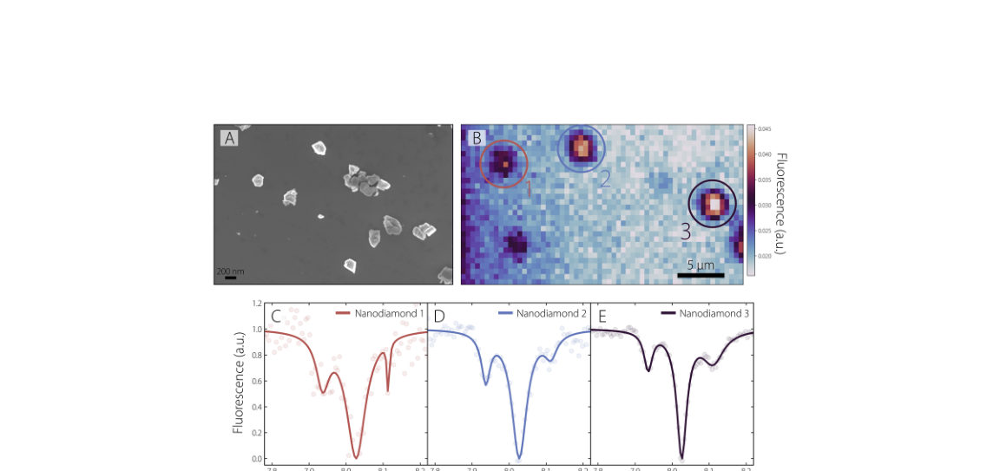
Summary. This paper introduces an isotropic nanoscale quantum sensor based on the $ ext{NV}^0$ center in diamond, overcoming the major limitation of conventional sensors whose sensitivity is restricted by crystal orientation. By utilizing a spin-pair mechanism, the sensor's response dynamically aligns with the external magnetic field, enabling nanotesla sensitivity and alignment-free magnetometry at room temperature.
Why it may be interesting. This work is highly relevant to AMO physics and quantum optics as it demonstrates a robust, solid-state quantum sensor operating at ambient conditions with long coherence times, pushing the boundaries of practical quantum sensing.
Main problem. Conventional color-center quantum sensors suffer from signal loss in off-axis magnetic fields because their spin quantization axes are fixed to the host lattice, limiting real-world applicability.
Main result. The use of the neutrally charged nitrogen-vacancy center ($ ext{NV}^0$) enables an isotropic magnetometer whose spin pair dynamically aligns with the external field, achieving nanotesla sensitivity at room temperature.
Method. The system uses Spin-to-Charge (SC)-ODMR spectroscopy to read out the spin state of the $ ext{NV}^0$-dark spin pair, which exhibits field-direction independence.
Model / system. The platform utilizes the $ ext{NV}^0$ center in diamond, specifically exploiting a spin-pair mechanism with an optically inactive dark spin. This pair's quantization axis dynamically aligns with the external magnetic field, providing an isotropic sensing mechanism.
Key observables. Resonance frequency of the central $|+1/2 angle \leftrightarrow |−1/2 angle$ transition, signal contrast, and coherence time ($T_2$).
Important parameters / regimes. Room temperature operation, nanotesla sensitivity, microsecond coherence time ($T_2 \approx 3 \mu ext{s}$), and alignment-free operation.
Assumptions / limitations. The core assumption is that the $ ext{NV}^0$-dark spin pair's spin selection rules result in a quantization axis that is rotationally invariant with respect to the external field.
Figures summary. Figures illustrate the dynamic alignment of the $ ext{NV}^0$-dark spin pair, the dual-band SC-ODMR readout mechanism, and field mapping demonstrating isotropic response across various orientations.
Paper structure. The paper progresses from identifying the limitation of fixed-axis sensors to proposing the $ ext{NV}^0$-dark spin pair mechanism. It details spectroscopic measurements (SC-ODMR), validates the isotropic nature through field mapping, and confirms long coherence times using quantum control techniques.
Color-center based quantum sensors provide nanoscale resolution under ambient conditions, yet their applicability remains limited. Because the quantization axes are locked to the host lattice, conventional color centers suffer severe signal loss in off-axis magnetic fields. To address this, we report an isotropic magnetometer enabled by the neutrally charged nitrogen-vacancy center (NV0) in diamond. Here, spin-to-charge dynamics yield an NV0-dark spin pair whose quantization axis dynamically aligns with the external field. Read out through NV charge-state-selective fluorescence, this system exhibits microsecond room-temperature coherence and nanotesla sensitivity for arbitrary field directions. We demonstrate alignment-free mapping of steep field gradients and single paramagnetic micro-targets, alongside isotropic readout from randomly oriented nanodiamonds. Resolving longstanding orientation constraints, this platform unlocks unrestricted nanoscale magnetometry across life sciences and quantum materials.
Authors: Holly A. J. Middleton-Spencer, Rose Davies, David G. Reid, Anna Dalmasso, Theodore Kazanas, Hannah M. Price
Type: theory · Category: quantum gases · PDF: https://arxiv.org/pdf/2608.26966v1
Analysis basis: full PDF text, analyzed in chunks
Topic relevance: analog quantum simulation 3/5 · Keldysh / 2PI / non-Gaussian methods 2/5 · Frenkel-Kontorova 1/5 · methods for driven-dissipative 1/5
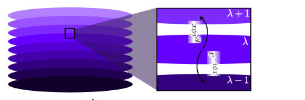
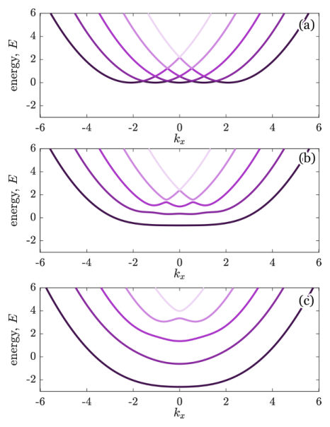
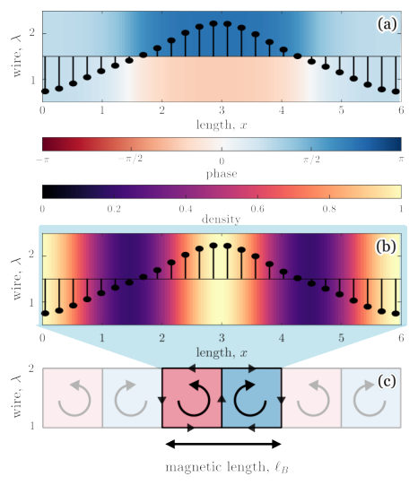
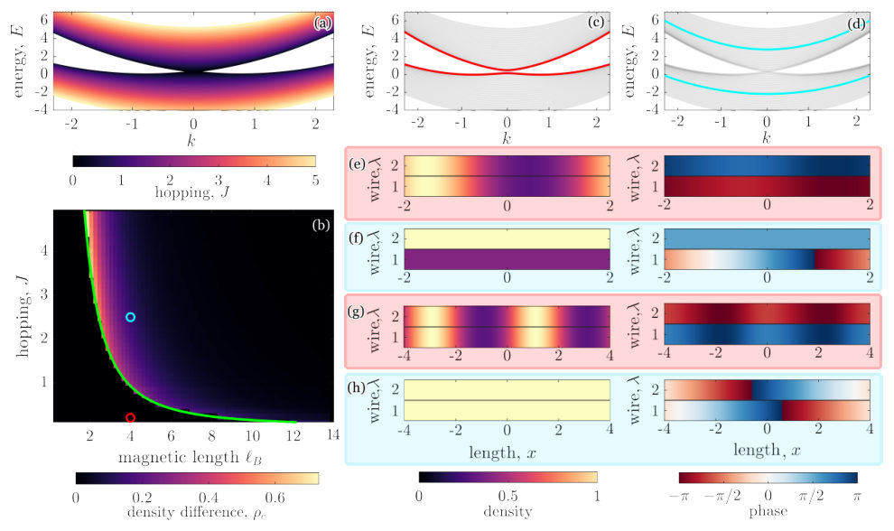
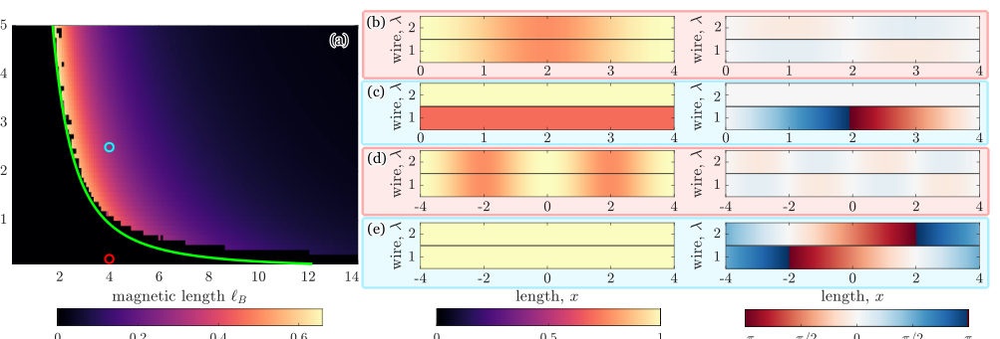
Summary. This paper theoretically examines how vortex lattices form in coupled 1D Bose-Einstein condensates subjected to a synthetic magnetic field. By analyzing the mean-field ground states, the authors show that the resulting vortex structure is critically governed by whether the system boundaries are periodic or open. The findings provide crucial insights into controlling quantum fluid behavior in engineered atomic potentials.
Why it may be interesting. This work directly addresses the interplay between topology (synthetic fields), geometry (finite size/boundary conditions), and superfluidity in ultracold atomic systems, which is a major frontier in AMO physics.
Main problem. The study investigates the mean-field ground states of coupled one-dimensional Bose-Einstein condensates subjected to a synthetic magnetic field.
Main result. The system's vortex structure is highly dependent on boundary conditions, favoring Abrikosov-like lattices under periodic boundary conditions and confining vortices centrally under open boundary conditions.
Method. The analysis employs mean-field theory, solving coupled Gross-Pitaevskii equations using numerical methods like imaginary time evolution and variational ansatz.
Model / system. The model is a coupled-wire system of 1D BECs, characterized by one continuous and one discrete spatial direction, allowing interpolation between few-leg ladders and extended vortex lattices.
Key observables. Density ($ ho_\lambda$), phase ($ heta_\lambda$), longitudinal and inter-wire currents ($j_{\parallel}, j_{\perp}$), and the emergence of vortex patterns.
Important parameters / regimes. Synthetic magnetic flux ($\phi$), inter-wire hopping strength ($J$), and the boundary conditions (Periodic vs. Open) in the discrete direction.
Assumptions / limitations. The analysis relies on mean-field approximations, treating the system as a bosonic condensate described by coupled Gross-Pitaevskii equations.
Figures summary. Figures illustrate the band structure for $N$ wires with open boundary conditions, showing how energy minima merge as coupling increases.
Paper structure. The paper progresses by first analyzing the non-interacting model, then developing the mean-field coupled-wire model, and finally comparing the resulting vortex states and ground state evolution under different boundary conditions.
We investigate the mean-field ground states of coupled one-dimensional Bose-Einstein condensates subject to a synthetic magnetic field. The resulting interacting coupled-wire model has one continuous and one discrete spatial direction, providing a controlled way to interpolate between the physics of few-leg ladders and extended vortex lattices. For two wires, we study the vortex-like, biased-density, and Meissner-like states, exploring how the finite longitudinal size of the system modifies the transitions between them. Increasing the number of wires, the ground state evolves towards an extended vortex lattice. We find numerically that periodic boundary conditions in the discrete direction can favour staggered arrays of like-signed vortices resembling an Abrikosov lattice, while open boundaries in small finite-size systems confine the vortices into rows near the centre of the synthetic direction. Our results explore how finite size effects and boundary conditions govern the emergence and spatial organisation of vortices in continuous-discrete quantum fluids, with relevance to future experiments in tunnel-coupled atomic wires or with synthetic dimensions.
Authors: Anaclara Alvez, Luca Camagna, Sergio Chibbaro, Cyril Furtlehner, François Landes, Gianluca Manzan, Lorenzo Mensi
Type: theory · Category: disordered systems and neural networks · PDF: https://arxiv.org/pdf/2608.26764v1
Analysis basis: full PDF text, analyzed in chunks
Topic relevance: non-equilibrium universality 3/5 · analog quantum simulation 1/5 · driven-dissipative phase transition 1/5 · methods for driven-dissipative 1/5
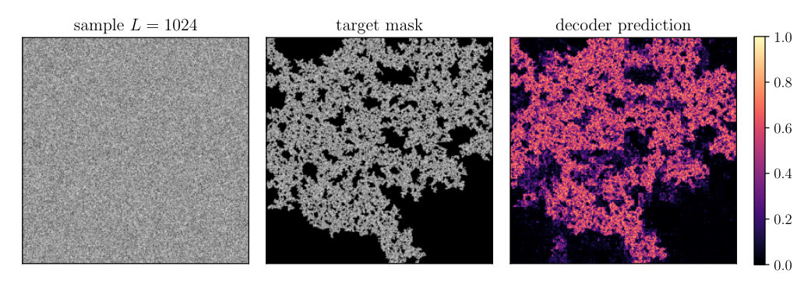
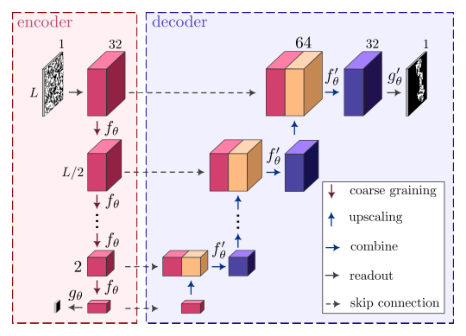
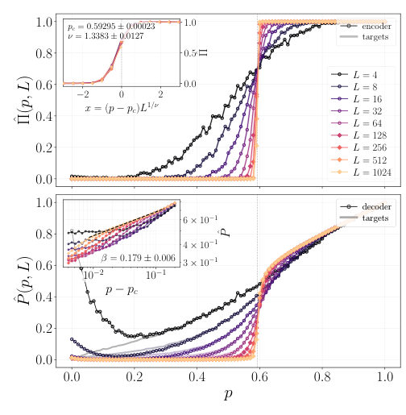
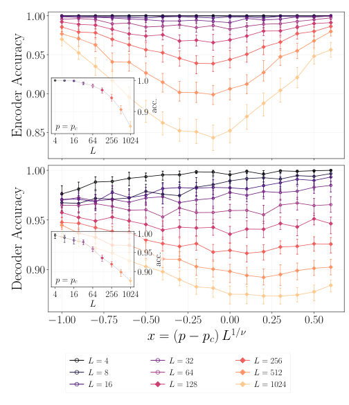
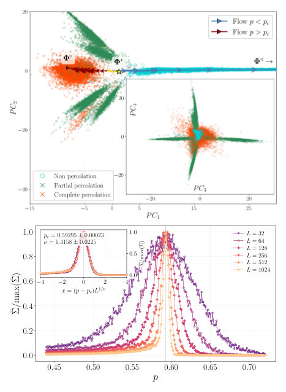
Summary. This paper proposes using a scale-shared neural network architecture to perform real-space renormalization group calculations for 2D site percolation. By forcing the network to learn scale-dependent transformations, the model accurately predicts critical observables and exhibits finite-size scaling behavior, demonstrating the power of integrating physical symmetries into machine learning models.
Why it may be interesting. The explicit incorporation of RG principles into a neural network architecture provides a powerful, data-driven tool for analyzing critical phenomena, which shares conceptual links with how quantum critical points are studied in many-body physics.
Main problem. Developing a data-driven, real-space renormalization group (RG) approach using machine learning to handle nonlocal observables in scale-invariant systems.
Main result. The model successfully predicts critical percolation observables, showing that the learned latent representation must exhibit critical fluctuations consistent with RG theory to achieve accurate finite-size scaling.
Method. A novel, scale-shared encoder-decoder neural architecture is trained to recursively apply coarse-graining and fine-graining rules across multiple scales.
Model / system. The study analyzes two-dimensional site percolation on a square lattice, a classic model for studying critical phenomena and phase transitions.
Key observables. Percolation probability ($\Pi$), order parameter ($P_\infty$), and the finite-size scaling variable $x = (p - p_c)L^{1/ u}$.
Important parameters / regimes. The critical probability $p_c$ and the correlation length exponent $ u$ are key parameters tested against theoretical predictions.
Assumptions / limitations. The core assumption is that the RG structure provides a necessary inductive bias that allows the network to extrapolate accurately to much larger systems than those used for training.
Figures summary. Figures illustrate the model's prediction of the spanning cluster mask at large sizes, the collapse of predicted observables onto finite-size scaling functions, and the schematic of the scale-shared RG-inspired architecture.
Paper structure. The paper introduces the problem of data-driven RG for nonlocal observables, details the scale-shared encoder-decoder architecture (encoder for coarse-graining, decoder for reconstruction), trains the model using specific losses, and validates its performance by demonstrating adherence to known finite-size scaling laws.
Machine learning offers a possible route to data-driven real-space renormalization when the relevant observables are nonlocal and difficult to prescribe explicitly. We explore this idea for two-dimensional site percolation developping a supervised, scale-shared neural architecture. The model recursively applies the same learned coarse-graining rule across scales, producing a latent field from which the crossing probability is predicted, while a corresponding fine-graining decoder reconstructs the largest-cluster mask. Trained only on small lattices, the model extrapolates to substantially larger systems, recovers the spanning cluster with high fidelity, and produces observables obeying the expected finite-size scaling near the critical point. We observe that to get such performance it is key that the learned latent representation exhibits critical fluctuations and scale-dependent flows consistent with the renormalization-group structure of percolation.
Authors: Alireza Maleki
Type: theory · Category: other · PDF: https://arxiv.org/pdf/2608.26420v1
Analysis basis: full PDF text, analyzed in chunks
Topic relevance: quantum measurements 3/5 · interference shaping light 2/5 · analog quantum simulation 1/5
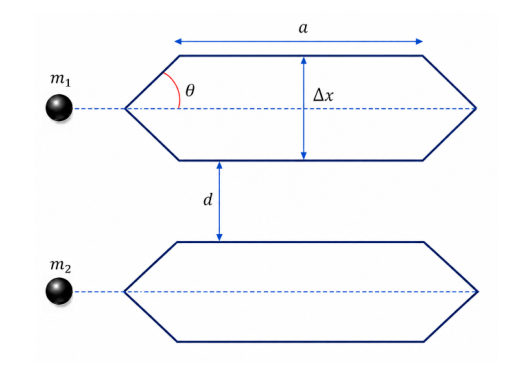
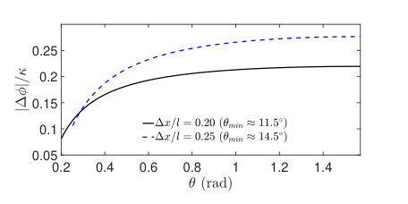
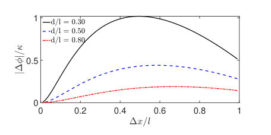
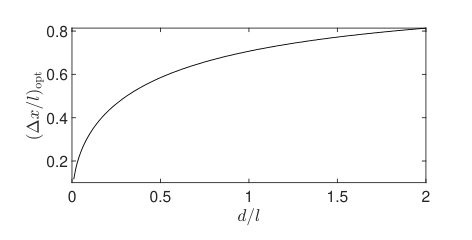
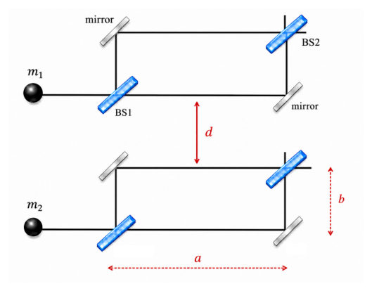
Summary. This paper investigates using quantum entanglement in massive particle interferometers as a potential probe for quantum gravity effects. The authors rigorously show that simplified models of the interferometer geometry fail to accurately predict the induced entanglement. They provide exact solutions demonstrating that the full geometric details are crucial for correctly assessing the potential for gravity-induced quantum correlations.
Why it may be interesting. This work is highly relevant as it applies advanced quantum measurement techniques (interferometry) to fundamental physics (quantum gravity), providing concrete, calculable predictions for future quantum sensing experiments that might involve matter waves.
Main problem. The study aims to probe the quantum nature of gravity by detecting gravitationally induced quantum entanglement between two massive particles using interferometry.
Main result. The analysis demonstrates that neglecting the full geometry of the interferometer, particularly the vertical path segments, leads to incorrect predictions for the induced entanglement, which can vanish entirely in specific configurations.
Method. The authors derive exact analytical solutions for the gravitational phase shifts and quantify entanglement using the concurrence measure, comparing these to simplified approximations.
Model / system. The physical system involves two massive particles passing through interferometer geometries (Stern-Gerlach and Mach-Zehnder setups). The evolution is governed by gravitational phase shifts derived from the interaction with the gravitational potential.
Key observables. Concurrence (C) quantifying entanglement, and the accumulated phase difference ($\Delta\phi$).
Important parameters / regimes. Particle masses ($m_1, m_2$), separation distance ($d$), and geometric ratios like $b/l$ and $\Delta x/l$.
Assumptions / limitations. The primary assumption being tested is the validity of approximations that neglect phase contributions from the vertical segments of the particle trajectories.
Figures summary. Figures illustrate the experimental setups (Fig. 1, Fig. 5) and show the dependence of the rescaled induced phase ($\Delta\phi/\kappa$) on geometric parameters like deviation angle ($ heta$), horizontal separation ($\Delta x/l$), and vertical arm ratio ($b/l$).
Paper structure. The paper progresses by establishing the physical problem, deriving simplified models, and then presenting exact solutions that incorporate full geometry. The structure emphasizes comparing the results of the simplified versus the exact treatments to highlight the necessity of full geometric consideration.
The pursuit of a quantum theory of gravity, aiming to unify general relativity and quantum mechanics, remains one of the most enduring challenges in physics. Because of the extreme energy scales associated with the Planck regime, direct experimental evidence for quantum gravity remains elusive. However, recent proposals suggest that quantum entanglement between two massive particles may provide a pathway to probe the quantum nature of gravity. In this study, we examine the interferometer geometries proposed in these works, with particular attention to the commonly used approximation that neglects phase contributions from the vertical segments of the particle trajectories. Our analysis shows that this approximation can lead to incorrect predictions and, in certain parameter regimes, to null results where entanglement would otherwise be expected. We derive exact solutions that incorporate the full particle trajectories and demonstrate that the vertical arms can significantly affect the accumulated phase. Crucially, we identify configurations in which the induced entanglement vanishes entirely, a feature missed by simplified treatments. These findings show that accounting for the full interferometer geometry is not merely a refinement, but is essential for accurately assessing gravity-induced entanglement.
Authors: Ratul Thakur, Sthitadhi Roy
Type: theory · Category: statistical mechanics · PDF: https://arxiv.org/pdf/2608.27440v1
Analysis basis: full PDF text, analyzed in chunks
Topic relevance: non-equilibrium universality 3/5 · analog quantum simulation 1/5 · scars & prethermalization 1/5
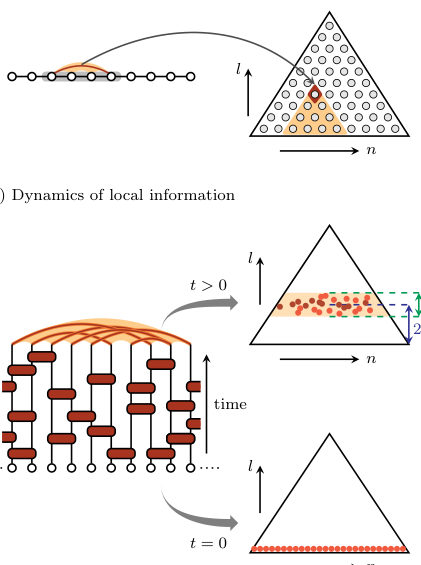
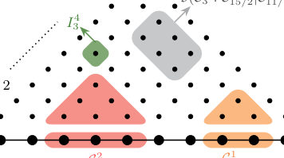
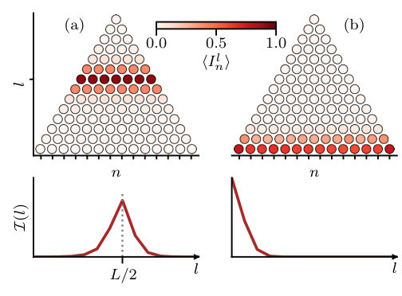
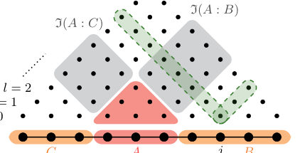
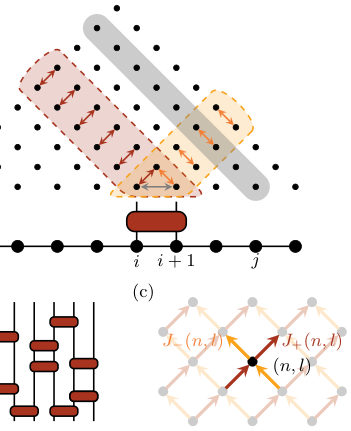
Summary. This work develops a novel framework, the information lattice, to track how local quantum information spreads across different length scales in chaotic quantum systems. By analyzing random unitary circuits, the authors find that this information flow exhibits universal scaling characterized by a Tracy-Widom distribution. This establishes a powerful, fine-grained diagnostic tool for understanding quantum scrambling.
Why it may be interesting. It provides a concrete, length-scale-resolved measure of information flow that bridges microscopic quantum dynamics with macroscopic, hydrodynamic-like descriptions of scrambling and thermalization.
Main problem. The paper addresses the limitation of standard, coarse-grained diagnostics (like bipartite entanglement) in characterizing the fine-grained spatiotemporal flow of local quantum information in out-of-equilibrium many-body systems.
Main result. The dynamics of local information are found to follow a universal scaling law, described by a Tracy-Widom distribution that grows ballistically in time ($\propto t$) with a $\sim t^{1/3}$ broadening, regardless of whether the system is Haar-random or Clifford.
Method. The authors develop a theory using an 'information lattice' to track information content at every length scale and location, mapping the dynamics onto an exact classical stochastic process for the infinite-dimensional limit.
Model / system. The study uses random unitary circuits as minimal models for quantum chaos, specifically examining Haar-random circuits (infinite local Hilbert space) and random Clifford circuits acting on qubits.
Key observables. Local information distribution across length scales, the dynamics of the information lattice, and the resulting Tracy-Widom distribution.
Important parameters / regimes. Time ($t$), local Hilbert-space dimension ($q$), and the specific type of random unitary circuit (Haar vs. Clifford).
Assumptions / limitations. Standard diagnostics are too coarse-grained; the local information dynamics can be mapped onto a classical stochastic process, and the results are assumed to be universal across different circuit types.
Figures summary. Figure 1 schematically illustrates the information lattice structure and the ballistic growth of information flow ($\propto t$) with $\sim t^{1/3}$ fluctuations.
Paper structure. The paper first introduces the information lattice framework to resolve local information flow. It then derives the dynamics for Haar-random circuits, mapping it to a classical stochastic process. Finally, it confirms the universal scaling behavior using random Clifford circuits via a phenomenological Markov process.
The physics of information scrambling in quantum many-body systems is intimately related to thermalisation and emergence of chaos. However, its standard characterisation through bipartite entanglement or operator growth remains inherently coarse-grained, obscuring the spatiotemporal anatomy of how quantum information flows between different regions of the system and across various length scales. In this work, we develop a theory for the dynamics of local information in local random unitary circuits which resolves the fine-grained microscopic structures of local information flow in such systems. Using the framework of information lattice which systematises the information content at each length scale within each subsystem, we identify a distribution of length scales at which information resides and obtain the dynamics of the distribution. For Haar-random circuits with infinite local Hilbert-space dimensions, we map this dynamics onto an exact classical stochastic process which reveals that this distribution is described by a Tracy-Widom form which moves ballistically in time ($ \propto t$) toward larger scales, accompanied by a $\sim t^{1/3}$ broadening. We also find the same qualitative behaviour for random Clifford circuits acting on qubits. The similar scaling behaviour in two rather different settings hints strongly towards the universality of our results. In the case of Clifford circuits, we develop a phenomenological Markov process for the dynamics of the stabiliser generators in a specific gauge which confirms the Tracy-Widom distribution and the $t^{1/3}$ scaling of the fluctuations. Ultimately, our results establish the universal properties of the dynamics of local quantum information in a length scale-resolved fashion and provide a possible route towards bridging exact microscopic theories for information dynamics with emergent hydrodynamic descriptions of information flow.
Authors: Boris A. Khanikati, Alexander G. Abanov
Type: theory · Category: quantum gases · PDF: https://arxiv.org/pdf/2608.26640v1
Analysis basis: full PDF text, analyzed in chunks
Topic relevance: Keldysh / 2PI / non-Gaussian methods 3/5 · methods for driven-dissipative 1/5 · non-equilibrium universality 1/5
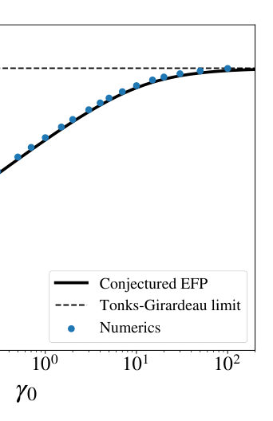
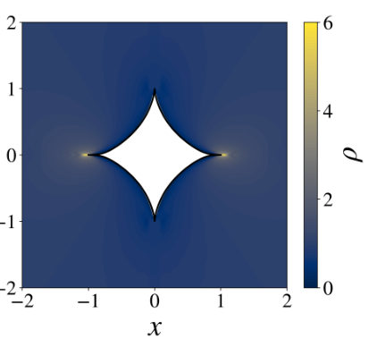
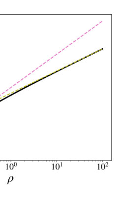
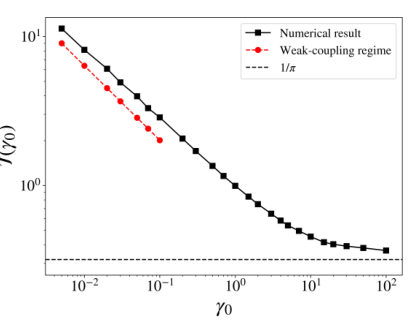
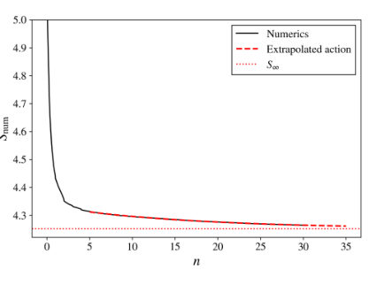
Summary. This theoretical paper calculates the rate function governing the probability of finding a macroscopic empty region in a 1D Lieb-Liniger Bose gas. By combining advanced techniques from quantum field theory and hydrodynamics, the authors derive a conjectured rate function that successfully reproduces known limits and matches high-precision numerical simulations. This provides a powerful, unified description of rare quantum fluctuations in strongly interacting quantum gases.
Why it may be interesting. This work provides deep insights into non-equilibrium quantum dynamics and rare events in interacting quantum gases, connecting field-theoretic methods (Fredholm determinants) to macroscopic observables like vacuum decay rates.
Main problem. The paper investigates the emptiness formation probability (EFP) in the ground state of the repulsive one-dimensional Lieb-Liniger Bose gas.
Main result. The authors derive a conjectured rate function $f(\gamma_0)$ for the EFP, which is shown to match known weak-coupling, strong-coupling, and numerical results for the Lieb-Liniger model.
Method. The analysis combines techniques from Fredholm determinants, dual-field representations, and variational minimization of the Euclidean hydrodynamic action.
Model / system. The system is the repulsive 1D Bose gas described by the Lieb-Liniger model, characterized by a repulsive delta-function interaction potential. The physics is analyzed in the ground state context.
Key observables. The Emptiness Formation Probability $P(R)$ for a macroscopic empty interval of length $2R$, and its asymptotic rate function $f(\gamma_0)$.
Important parameters / regimes. The dimensionless interaction strength $\gamma_0 = c/ ho_0$, and the empty interval length $R$.
Assumptions / limitations. The primary assumption is the validity of a 'double-scaled determinant hypothesis' for the asymptotic evaluation, which the authors note remains unproven.
Figures summary. Figures illustrate the numerical emptiness instantons, which are characterized by astroid-like vacuum regions, confirming the theoretical predictions.
Paper structure. The paper progresses from the initial Fredholm determinant representation of the EFP to a proposed double-scaled determinant hypothesis. It then relates this to the minimization of the hydrodynamic action, culminating in the derivation and verification of the rate function $f(\gamma_0)$ across different coupling regimes.
We study the emptiness formation probability (EFP) in the ground state of the repulsive one-dimensional Lieb-Liniger Bose gas. For a macroscopic empty interval of length $2R$, its leading asymptotic behavior is described by a rate function $f(γ_0)$, defined by $-\log P(R)\sim(ρ_0R)^2f(γ_0)$, where $ρ_0$ is the mean density and $γ_0$ is the dimensionless interaction strength. We propose a parameter-free integral equation for $f(γ_0)$. Starting from the exact dual-field Fredholm-determinant representation of the EFP, we show how the conjectured kernel arises formally and identify the uniform asymptotic statement that remains to be proven for a rigorous derivation. The conjecture reproduces the Tonks-Girardeau and weak-coupling limits, as well as the first correction obtained independently in both limits. It also agrees at the few-percent level with numerical minimization of the Lieb-Liniger hydrodynamic action over more than four orders of magnitude in coupling. The numerical calculation yields the corresponding emptiness instantons and their astroid-like vacuum regions.
Authors: Lakshya Bhardwaj, Ankit Tiwari, Mohan Sarovar, Christian Arenz
Type: theory · Category: quantum information and computing · PDF: https://arxiv.org/pdf/2608.26350v1
Analysis basis: full PDF text, analyzed in chunks
Topic relevance: interference shaping light 3/5 · quantum measurements 1/5
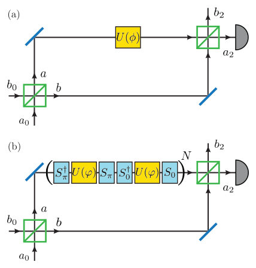
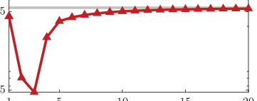
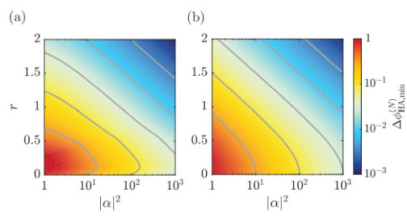
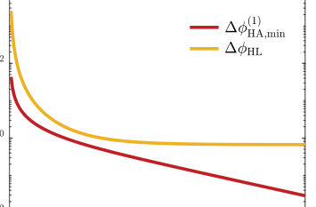
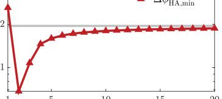
Summary. This paper proposes a dynamic squeezing technique, called Hamiltonian Amplification, to significantly boost the phase sensitivity of a Mach-Zehnder interferometer. By strategically applying squeezing operations, the protocol achieves sensitivity enhancements surpassing the standard quantum limit and even the Heisenberg limit. Crucially, the method is shown to maintain high performance even when accounting for realistic photon losses.
Why it may be interesting. This work provides a concrete, implementable quantum sensing protocol that surpasses fundamental quantum limits, which is highly relevant for quantum optics and quantum metrology.
Main problem. The paper addresses the challenge of enhancing the phase sensitivity of a Mach-Zehnder interferometer (MZI) beyond the standard quantum limit and potentially beyond the Heisenberg limit.
Main result. A dynamic squeezing protocol, implemented via Hamiltonian Amplification (HA), was shown to enhance phase sensitivity generically, achieving super-Heisenberg scaling even with vacuum input and remaining robust against moderate photon loss.
Method. The enhancement is achieved by applying alternating squeezing operations within the MZI structure, modeled using a Trotterized sequence of unitary operations.
Model / system. The physical system is a Mach-Zehnder interferometer used for phase estimation. The model involves applying squeezing operators ($S_ heta(r)$) interleaved with the phase shifter $U(\phi)$ in one arm.
Key observables. Phase uncertainty ($\Delta\phi$), minimum phase uncertainty ($\Delta\phi_{\min}$), and the enhancement factor ($\lambda$).
Important parameters / regimes. Squeezing strength ($r$), number of Trotter steps ($N$), and the effective loss parameter ($l_{ ext{eff}}$).
Assumptions / limitations. The analysis relies on the Trotter limit ($N o \infty$) for the ideal enhancement, and later incorporates models for photon loss occurring after each squeezing operation.
Figures summary. Figures illustrate the minimum phase uncertainty versus the number of Trotter steps ($N$) for various input states, comparing the HA protocol against the Standard Quantum Limit (SQL). Other figures show robustness against varying levels of photon loss.
Paper structure. The paper first introduces the HA protocol using squeezing sequences, deriving the enhancement factor in the Trotter limit. It then compares the resulting phase sensitivity for coherent, vacuum, and squeezed vacuum inputs relative to the SQL and HL. Finally, it extends the analysis to include realistic photon loss models.
We propose a method to enhance the phase sensitivity of a Mach-Zehnder interferometer, independent of its input states. This is achieved by applying squeezing sequences to one arm of the interferometer. By alternating between squeezing along orthogonal quadratures, we demonstrate that the phase sensitivity of a Mach-Zehnder interferometer can be generically enhanced. Since this enhancement is independent of the input states, the proposed dynamic squeezing method allows for further improvement in phase sensitivity when combined with non-classical input states. We compare the dynamic squeezing approach with existing quantum sensing protocols and show that super-Heisenberg scaling can be achieved. Finally, we demonstrate that the scheme is robust against moderate photon loss.
Authors: Jonah Herzog-Arbeitman, Eslam Khalaf, Zhaoyu Han
Type: theory · Category: strongly correlated electrons · PDF: https://arxiv.org/pdf/2608.27446v1
Analysis basis: full PDF text, analyzed in chunks
Topic relevance: scars & prethermalization 3/5 · analog quantum simulation 1/5
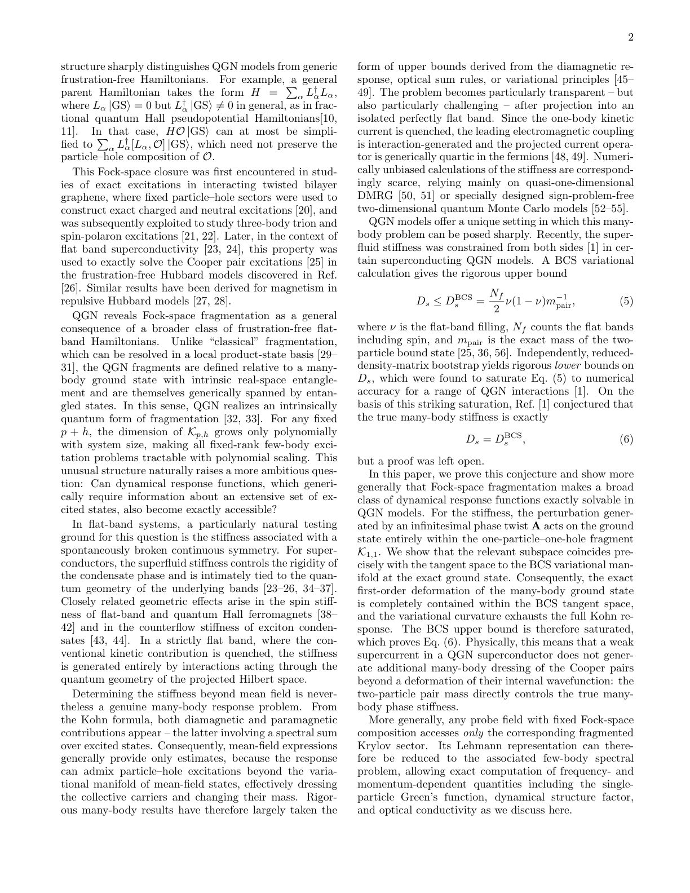
Summary. This work tackles the difficulty of calculating dynamic properties in complex quantum many-body systems by identifying a structural feature called Fock-space fragmentation in QGN models. This fragmentation allows the system's excitations to decouple into manageable subspaces. By exploiting this, the authors prove that key quantities, such as the superconducting stiffness, can be calculated exactly using variational methods.
Why it may be interesting. The concept of Fock-space fragmentation provides a powerful, exact solvability mechanism for calculating dynamic responses in strongly correlated systems, bypassing the need to diagonalize the full, complex spectrum.
Main problem. The primary challenge is obtaining exact dynamical responses (like stiffness or susceptibility) for quantum many-body models, as these probes typically couple to an extensive number of excited states.
Main result. The stiffness of the spontaneously broken continuous symmetry in Quantum Geometric Nesting (QGN) models is proven to be exactly equal to its variational value, confirming a key conjecture in the field.
Method. The proof exploits a structural property called Fock-space fragmentation, which causes excitations to decouple into subspaces with fixed particle and hole numbers.
Model / system. The study focuses on Quantum Geometric Nesting (QGN) models, which are idealized, frustration-free descriptions of symmetry-breaking orders in fermionic flat bands. The Hamiltonian structure allows for this fragmentation.
Key observables. Stiffness of spontaneously broken continuous symmetry, static susceptibility, optical conductivity, dynamical structure factors, and single-particle Green's functions.
Important parameters / regimes. The analysis is particularly sensitive to the fixed particle-hole composition of the excitations and the coupling strength related to the phase twist.
Assumptions / limitations. The general result holds for perturbations whose action remains confined within a fixed Fock-space fragment.
Paper structure. The paper establishes the general problem, introduces the QGN model and the concept of Fock-space fragmentation, and then applies this structure to prove the exactness of the stiffness calculation by showing the relevant perturbation is confined to the one-particle–one-hole fragment.
Exactly solvable quantum many-body models are rare, and even when their spectra are algebraically organized, dynamical responses generally remain difficult to obtain because they probe an extensive number of excited states. Here we show that quantum geometric nesting (QGN) models admit an unusually strong form of solvability rooted in \emph{Fock-space fragmentation}: excitations on top of the exact frustration-free ground states decouple into Krylov subspaces with a fixed number of particle and hole operators, and hence remain dynamically invariant. Exploiting this structure, we prove that the stiffness of the spontaneously broken continuous symmetry in QGN models is exactly equal to its variational value in the Gaussian manifold, confirming a conjecture from quantum many-body bootstrap~\cite{GaoHanKhalaf2026}. The proof shows that an infinitesimal phase twist couples the ground state only to the one-particle, one-hole fragment, which coincides with the tangent space of the ground state within the variational manifold, thereby making the variational curvature exact. More generally, perturbations whose action remains within a fixed Fock-space fragment have response functions determined exactly by the corresponding few-body sector, enabling exact access to quantities including static susceptibility, optical conductivity, dynamical structure factors, and single-particle Green's functions.
Authors: Johann Drayne, George Ridgard, Lorenzo Peri, Frederic Schlattner, Fabio Olivieri, Mathieu de Kruijf, Isaac Harris, Grayson Noah, James Kirkman, Alberto Gomez-Saiz, M. Fernando Gonzalez-Zalba, Thomas Swift
Type: experiment · Category: other · PDF: https://arxiv.org/pdf/2608.27057v1
Analysis basis: full PDF text, analyzed in chunks
Topic relevance: QC/QI experiment 3/5 · quantum measurements 1/5
Summary. This paper presents a novel, highly sensitive, on-chip thermometry platform using superconducting TiN resonators to measure temperature fluctuations in cryogenic environments. By performing time-resolved pulsed heating experiments, the authors quantified the speed and mechanism of heat dissipation, revealing that thermal transport is limited by substrate or interface resistance rather than the superconducting material itself. This capability is vital for designing and operating next-generation quantum processors.
Why it may be interesting. This work provides a crucial, highly integrated, and quantitative tool for characterizing the thermal environment of quantum devices, which is essential for understanding decoherence mechanisms in solid-state quantum computing architectures.
Main problem. The primary challenge is accurately measuring fast, time- and distance-dependent temperature fluctuations within high-performance cryogenic devices like quantum processors.
Main result. The authors demonstrated sub-millikelvin temperature sensitivity and quantified the heat propagation velocity as $3.9 \pm 0.1 ext{ mm } \mu ext{s}^{-1}$, identifying the rate-limiting thermal bottlenecks at different cryogenic temperatures.
Method. They employed a time-resolved thermometry platform using TiN kinetic inductance resonators integrated into a 22 nm FDSOI chip, measuring temperature via shifts in the microwave resonant frequency.
Model / system. The system involves superconducting TiN films whose kinetic inductance ($L_k$) is temperature-dependent due to Cooper-pair depairing. Thermal dynamics are modeled using lumped-element approximations involving temperature-dependent heat capacity ($C_{total}$) and thermal conductance ($G_{total}$).
Key observables. Temperature-dependent resonant frequency shifts ($\partial f_r/\partial T$), thermal relaxation time ($ au_{ ext{cooling}}$), and the onset delay time ($t_0$).
Important parameters / regimes. Sub-millikelvin temperature sensitivity, heat propagation velocity ($3.9 ext{ mm } \mu ext{s}^{-1}$), and distinct thermal regimes (substrate-limited vs. Kapitza boundary-limited).
Assumptions / limitations. The analysis assumes kinetic inductance dominates over geometric inductance, and that the measured thermal response is limited by substrate or interface resistance rather than intrinsic superconducting recovery.
Figures summary. Figures illustrate the temperature dependence of the resonant response, the calculated temperature sensitivity ($\delta T$), and time-resolved measurements showing how thermal relaxation times ($ au_{ ext{cooling}}$) change with distance and temperature, revealing distinct physical regimes.
Paper structure. The paper first establishes the thermometry technique using kinetic inductance resonators. It then moves to time-resolved pulsed heating experiments to map thermal decay kinetics. Finally, it analyzes the distance dependence of the thermal relaxation time to determine the rate-limiting heat transport mechanism.
Understanding the temporal and spatial dependence of temperature is critical in high-performance cryogenic devices. Typical thermometry techniques struggle to simultaneously combine high bandwidth, sensitivity and on-chip integration, limiting their ability to measure fast intra-device thermal fluctuations. Here, we demonstrate a time-resolved thermometry platform based on TiN kinetic inductance resonators integrated in a 22 nm FDSOI chip. By tracking temperature-dependent shifts in the resonant frequency, we achieve sub-millikelvin temperature sensitivity down to temperatures of 100 mK. Time-resolved on-chip pulsed heating experiments as a function of distance reveal an onset delay, consistent with a quasi-ballistic heat propagation velocity of 3.9 ${\pm}$ 0.1 mm $μ$s${}^{-1}$. We also show that elevated temperatures increase net thermal conductance, shortening thermal relaxation times across all spatial separations. This behaviour manifests in two distinct regimes: a substrate-limited regime at 100 mK, where cooling rates vary with heater distance, and a Kapitza boundary-limited regime at 400 mK, where thermal relaxation becomes more spatially uniform.These measurements demonstrate kinetic inductance thermometry's ability to rapidly probe non-equilibrium temperature dynamics in cryogenic devices such as quantum processors.
Authors: Guowen Jiang, Feilong Wang, Yunhua Wang, Fawei Zheng, Bin Xi, Hong-Gang Luo, Jize Zhao
Type: both · Category: other · PDF: https://arxiv.org/pdf/2608.26540v1
Analysis basis: full PDF text, analyzed in chunks
Topic relevance: quantum measurements 3/5 · analog quantum simulation 1/5
Summary. This study develops a method to measure the weak altermagnetic exchange coupling ($\delta J_7$) in $ ext{MnF}_2$ by exploiting its field-dependent magnetic excitations. By applying a longitudinal magnetic field, the authors linearize the readout, allowing the weak coupling to be determined from the shift of the minimum magnon splitting ($B^*$) or the field-linear contrast ($C(B)$). This technique proves that subtle, symmetry-related interactions can be brought into the reach of current experimental measurements.
Why it may be interesting. This work provides a sophisticated example of using external fields to linearize the measurement of a weak, symmetry-protected interaction, a concept applicable to detecting subtle couplings in complex quantum materials.
Main problem. The paper aims to detect and quantify the weak, sublattice-odd exchange coupling ($\delta J_7$) that characterizes the altermagnetic nature of $ ext{MnF}_2$, as this signal is otherwise masked by dominant interactions at zero field.
Main result. The authors demonstrate two complementary, field-dependent readouts—the compensation field shift ($B^*$) and the fixed-field contrast ($C(B)$)—that linearly amplify the weak exchange scale, confirming its existence and magnitude ($\delta J_7 \simeq +8 \mu ext{eV}$).
Method. The analysis combines first-principles total-energy mapping to determine the coupling scale with theoretical modeling using linear spin-wave theory applied to the resulting effective Hamiltonian.
Model / system. The system is $ ext{MnF}_2$, modeled as a two-sublattice antiferromagnet. The effective Hamiltonian includes Heisenberg exchange, long-range dipole-dipole interaction (DDI), and Zeeman coupling, analyzed via the bosonic Bogoliubov-de Gennes spectrum.
Key observables. The primary observables are the minimum splitting position $B^*(\mathbf{Q})$ (compensation field) and the field-dependent contrast $C(B) = \Omega_{\mathbf{A}}(B) - \Omega_{\mathbf{A}'}(B)$, both of which are linear in $\delta J_7$.
Important parameters / regimes. The key scale is the seventh-neighbor imbalance $\delta J_7 \simeq +8 \mu ext{eV}$. The readouts are quantified by the compensation field $|B^*| \simeq 0.34 ext{ T}$ and the fixed-field contrast $\simeq 0.14 ext{ meV}$ at $1 ext{ T}$.
Assumptions / limitations. The analysis assumes that the DDI dominates the visible fine structure, allowing the weak exchange to manifest as a measurable asymmetry amplified by an external longitudinal magnetic field.
Figures summary. Figures illustrate the structure of $ ext{MnF}_2$ and show the field dependence of the magnon splitting $\Omega(B)$, demonstrating the shift of the minimum splitting ($B^*$) and the linear, odd dependence of the contrast $C(B)$ on the applied field.
Paper structure. The paper establishes the physical problem (masked $\delta J_7$), develops the theoretical framework using symmetry relations and the BdG spectrum, proposes two field-dependent readouts ($B^*$ and $C(B)$), and finally presents calculations confirming the measurable, linear amplification of the weak exchange scale.
MnF$_2$, the textbook two-sublattice antiferromagnet, has reemerged as a prototypical altermagnet, yet the sublattice-odd exchange that defines this identity remains under active debate: it enters the magnon splitting only in quadrature with the dipole--dipole interaction, its magnitude suppressed and its sign erased. An overdetermined first-principles total-energy mapping resolves this scale as a seventh-neighbor imbalance $δ{J_7}\simeq+8~μ$eV. The resulting Hamiltonian, with the dipole--dipole interaction included explicitly, reproduces the low-energy gap and the visible finite-momentum splitting. A longitudinal field $B\parallel c$ then acts as a linear amplifier of the hidden scale, opening two signed, field-linear readouts. The first is the compensation field $B^\ast(\mathbf Q)$, the position of minimum splitting, which is equal and opposite at the rotation-related partner momenta: a shift from zero field is itself evidence of a finite imbalance, its side gives the sign, and its magnitude, $|B^\ast|\simeq0.34$~T here, gives the scale. The second is the fixed-field contrast of the partner splittings, $\simeq0.14$~meV at $1$~T, six times the zero-field excess: a sign check from just two spectra. Both readouts survive a $0.12$~meV energy resolution, and the construction carries over to any easy-axis collinear altermagnet, bringing $μ$eV altermagnetic exchange within present instrumental reach.
Authors: Herve Zwirn
Type: theory · Category: other · PDF: https://arxiv.org/pdf/2608.26361v1
Analysis basis: full PDF text, analyzed in chunks
Topic relevance: quantum measurements 3/5 · analog quantum simulation 1/5
Summary. This paper argues that quantum observations are inherently perspectival, meaning facts must always be indexed to the observer's viewpoint. It develops a formal 'Perspectival Logic' to prevent classical fallacies from treating these indexed statements as belonging to a single, absolute factual domain. This reframes the measurement problem as a problem of logical discourse rather than solely a physical collapse mechanism.
Why it may be interesting. While highly philosophical, the rigorous development of a formal logic for perspectival facts provides a novel framework for interpreting measurement processes in open quantum systems, which is central to quantum information theory.
Main problem. The paper addresses the conceptual difficulties in interpreting quantum mechanics, specifically how to treat observed quantum events when they are not absolute facts.
Main result. It establishes 'Convivial Solipsism' as a 'discipline of perspectival discourse,' arguing that all observational facts must be indexed to the perspective from which they are viewed.
Method. The methodology involves reconstructing a formal logic (Perspectival Logic) to govern the formation and combination of observational statements, contrasting it with classical logic.
Model / system. The discussion uses thought experiments derived from quantum mechanics, particularly Wigner's friend scenarios, to illustrate the breakdown of classical assumptions about shared, absolute facts.
Key observables. The primary observables are the structure and indexing of observational statements, such as '[Observer] saw outcome X'.
Important parameters / regimes. The key conceptual parameters are the 'perspective index' and the 'Tracking Assumption' (the inference that an attributed outcome matches the observer's actual experience).
Assumptions / limitations. The core assumption is that quantum observations are inherently perspectival, leading to the rejection of a single, global factual domain for measurement outcomes.
Paper structure. The paper systematically identifies misunderstandings arising from classical language applied to quantum phenomena, proposes the formal grammar of perspectival indexing, and contrasts this new logic with standard logical frameworks.
Convivial Solipsism is easily misunderstood. Because it denies the absoluteness of observed events while preserving the universality of quantum mechanics, it invites objections that are often formulated in a classical, non-perspectival language. Such objections appear powerful only because they smuggle back into the discussion the very assumptions that Convivial Solipsism rejects. This article reconstructs a family of misunderstandings that arise in discussions of Convivial Solipsism, especially in connection with Wigner's friend and extended Wigner's friend scenarios. The aim is not merely defensive. The objections are useful because they identify the conceptual discipline required by any interpretation that takes non-absolute facts seriously. The central claim is that observational facts must be indexed to perspectives. A statement such as "the friend saw outcome A" is not a complete factual statement within Convivial Solipsism. It must be reformulated as "from the friend's perspective, the friend saw outcome A" or "from Wigner's perspective, the friend reported outcome B." The mistake consists in removing these indices and then treating the resulting expressions as if they belonged to a single global factual domain. This leads to apparent contradictions and to false dilemmas concerning consciousness, communication, other minds, and intersubjectivity. When that is taken into account, it appears that Convivial Solipsism is not a retreat into psychological solipsism, but a discipline of perspectival discourse. It is also shown that perspectival logic stands to classical logic as the quantum calculus of probability stands to Kolmogorovian probability theory.
Authors: Shang Xian Matthew Lee, Melissa Kozul, Muhammad Usman, Martin Sevior, Matthew L. Sims-Goh, Richard D. Sandberg
Type: theory · Category: numerical methods · PDF: https://arxiv.org/pdf/2608.26995v1
Analysis basis: full PDF text, analyzed in chunks
Topic relevance: methods for driven-dissipative 3/5 · analog quantum simulation 1/5
Summary. This work presents a novel Quantum-Inspired Computational Fluid Dynamics (QICFD) solver capable of simulating compressible, turbulent flows using the Tensor Train (TT) format. It overcomes previous limitations by introducing new algorithms for TT division and square-root operations. The successful validation on the Taylor-Green Vortex test case demonstrates that TT methods can accurately handle complex, non-linear physics beyond incompressible regimes.
Why it may be interesting. While focused on classical fluid dynamics, the reliance on tensor networks (TT format) and the development of specialized arithmetic operations for high-dimensional tensor representations are highly relevant to quantum simulation techniques used in many-body physics.
Main problem. The paper addresses the challenge of applying quantum-inspired computational fluid dynamics (QICFD) methods, which use tensor network representations, to simulate compressible fluid flows governed by the Navier-Stokes equations.
Main result. The authors successfully introduce a complete QICFD solver for compressible flow by developing new, robust algorithms for division and square-root operations within the Tensor Train (TT) format, achieving excellent agreement with classical solvers on challenging test cases.
Method. The core method involves representing the high-dimensional fluid state using the Tensor Train (TT) format and developing specialized algorithms (based on Newton-Raphson) to perform necessary arithmetic operations like division and square-root required for compressible physics.
Model / system. The physical system is compressible fluid flow, modeled by the Navier-Stokes equations. The numerical framework uses the TT format to encode the state, allowing for efficient computation of derivatives and non-linear terms.
Key observables. Density (rho), velocity components (u, v, w), temperature (T), pressure (p), total kinetic energy, and enstrophy.
Important parameters / regimes. Mach number (Ma), Reynolds number (Re), and the bond dimension ($\chi$) governing the TT approximation.
Assumptions / limitations. The primary assumptions involve the applicability of the TT decomposition to the flow field and the successful implementation of the new TT arithmetic algorithms for division and square-root.
Figures summary. Figures illustrate the general structure of finite difference Tensor Train Operators (TTOs) and the use of binary lookup tables to construct these operators for various stencil widths.
Paper structure. The paper systematically builds the QICFD framework: first, by establishing the TT representation for operators (TTOs) to handle spatial derivatives; second, by developing the necessary arithmetic tools (division, square-root); and finally, by applying these tools to solve the full, compressible Navier-Stokes equations using a time-stepping scheme.
Quantum-inspired algorithms are an emerging class of algorithms for computational fluid dynamics (CFD) with potentially favourable scaling for large problems compared to classical methods. However, their applications have been limited to incompressible flows due to arithmetic limitations, which are addressed in this work. This work introduces the first complete quantum-inspired computational fluid dynamics (QICFD) solver for direct numerical simulation of the compressible Navier--Stokes equations, that is, all arithmetic operations are undertaken in the tensor train (TT) format. Importantly, new division and square-root algorithms using TTs enable the use of Sutherland's law for viscosity. The new QICFD solver is validated by comparison with the classical CFD solver HiPSTAR and by way of a challenging fluid-flow test case, the low resolution Taylor--Green Vortex (TGV) at Mach numbers of 0.8 and 0.1. The TGV test case is a transient turbulent case that is very sensitive to accumulating errors, yet our QICFD solver achieves excellent agreement with the classical CFD reference. This work demonstrates the correctness of the new TT division and square-root algorithms, and that QICFD is capable of compressible flow simulations. The new QICFD solver is also able to perform simultaneous simulations, running multiple TGV-like cases initialised differently in parallel with marginal (10-20%) extra cost. Finally, the demonstrated TGV test case reveals additional challenges of QICFD as well as highlight the need for future advances to make TT methods viable for industrially-relevant conditions.
Authors: Rongge Xu, Holiverse Yang
Type: theory · Category: strongly correlated electrons · PDF: https://arxiv.org/pdf/2608.27228v1
Analysis basis: full PDF text, analyzed in chunks
Topic relevance: analog quantum simulation 3/5
Summary. This paper establishes a rigorous mathematical framework, using $n$-Morita categories, to unify the study of higher Morita equivalence for topological orders. By proving the equivalence of the module-realization functor for $n=1, 2$, it provides a powerful tool to relate abstract algebraic structures to concrete module categories describing physical defects.
Why it may be interesting. Topological order theories are deeply connected to condensed matter physics, particularly in describing fractional quantum Hall states and exotic phases of matter, making this highly relevant for understanding strongly correlated systems.
Main problem. The paper develops a systematic framework to compare and unify different notions of higher Morita equivalence for $E_n$-algebras, particularly in the context of topological orders.
Main result. The module-realization functor $ ext{Mod}_n$ is proven to be an equivalence for $n=1$ and $n=2$, successfully relating the abstract algebraic description to its concrete realization in module categories.
Method. The authors utilize advanced category theory, introducing $n$-Morita categories $\mathrm{Mrt}_{E_n}(\mathcal{C})$ and defining the functor $ ext{Mod}_n$ by relating higher algebraic structures (like $E_n$-algebras) to module categories.
Model / system. The theory is applied to topological orders, which are mathematically described using $E_n$-algebras and their associated module categories, providing a framework for understanding defects and condensation.
Key observables. The structure of higher Morita categories, the explicit orientation data, and the fusion rules governing defects arising from condensation in topological orders.
Important parameters / regimes. The dimension $n$ of the topological order ($E_n$-algebras) and the underlying fusion category $\mathcal{C}$.
Assumptions / limitations. The authors do not establish a general equivalence between all three proposed constructions of higher Morita categories (Haugseng, Gwilliam–Scheimbauer, bi-bimodule model) and expect the equivalence to hold for all $n$.
Figures summary. Figure 1 illustrates complex bimodule structures involving multiple algebras ($A_1, A_2, A_3, A_4$), while the text describes the structure of the 2-category $ ext{Mrt}E_1(\mathcal{C})$.
Paper structure. The paper progresses by defining the $n$-Morita category, comparing different formalisms for higher Morita theory, and culminating in the proof that the module-realization functor $ ext{Mod}_n$ establishes key equivalences for low dimensions ($n=1, 2$).
Building on our previous work on 2-Morita equivalence for $E_2$-algebras using topological pictures, we develop a systematic framework for Morita equivalence of topological orders in different dimensions in terms of $n$-Morita categories $\mathrm{Mrt}_{E_n}(\mathcal{C})$. In this framework, various notions of $n$-Morita equivalence are unified as equivalences of objects in $\mathrm{Mrt}_{E_n}(\mathcal{C})$. We also compare the constructions of higher Morita categories due to Haugseng and to Gwilliam--Scheimbauer. For $n=1,2$, we prove that the functor $\mathrm{Mod}_n:\mathrm{Mrt}_{E_n}(\mathcal{C})\to \mathrm{Mrt}_{E_{n-1}}(\mathrm{LMod}^{\mathrm{rep}}(\mathcal{C}))$ is an equivalence, relating the algebraic description of higher Morita theory to its realization in terms of module categories. In this formulation, the notion of a bi-bimodule arises naturally and provides a common framework for local and confined modules. Its explicit orientation data, together with the corresponding fusion rules, clarifies the relations among defects arising from condensation in topological orders.
Authors: R. Muciño, E. Okon, D. Sudarsky, M. Wiedemann
Type: theory · Category: other · PDF: https://arxiv.org/pdf/2608.26474v1
Analysis basis: full PDF text, analyzed in chunks
Topic relevance: quantum measurements 3/5
Summary. This paper tackles the profound challenge of making objective collapse theories—which solve the quantum measurement problem—compatible with special and general relativity. The authors systematically rebut common conceptual objections, such as frame-dependence, and propose technical strategies, like using state-dependent collapse operators, to build a viable, fully relativistic quantum framework.
Why it may be interesting. This work is highly relevant as it tackles the fundamental intersection of quantum foundations and general relativity, which is a major open problem in theoretical physics, impacting any theory attempting to describe quantum gravity effects.
Main problem. The central challenge is extending objective collapse theories, which solve the measurement problem non-relativistically, into a fully consistent and covariant relativistic framework.
Main result. The authors argue that conceptual objections to relativistic collapse theories are surmountable, providing a structured path forward that suggests these theories remain a promising route to a fully relativistic quantum description.
Method. The paper employs systematic conceptual rebuttals against objections (like frame-dependence and superluminal signaling) and analyzes technical constraints imposed by special and general relativity on collapse dynamics.
Model / system. The discussion centers on objective collapse models (like GRW and CSL) and their mathematical formulation when subjected to relativistic constraints, contrasting non-relativistic stochastic/nonlinear modifications with covariant field theory requirements.
Key observables. Frame-independent property acquisition, stochasticity determination, and adherence to Lorentz invariance.
Important parameters / regimes. Collapse rate ($\lambda$), smearing width ($r$), and the distinction between Minkowski and curved spacetime backgrounds.
Assumptions / limitations. The analysis critically examines the assumptions underlying existing 'no-go' theorems (e.g., Myrvold's theorem), noting their dependence on state-independent dynamics and Minkowski spacetime.
Figures summary. Figures illustrate the causal relationships between smearing regions in spacetime, showing cases where a natural, covariantly defined ordering can be established, thereby potentially resolving apparent conflicts with relativity.
Paper structure. The paper first reviews the success and requirements of non-relativistic collapse models, then systematically addresses the conceptual objections arising in the relativistic domain (e.g., frame-dependence), and finally proposes technical strategies (like state-dependent operators and covariant ordering) to reconcile collapse with special and general relativity.
Non-relativistic objective collapse theories have been remarkably successful in addressing the conceptual problems of standard quantum mechanics. Despite substantial efforts, the project of extending them to the relativistic domain remains burdened by significant conceptual objections and technical challenges, often taken to cast doubt on the viability of the program as a whole. On the conceptual side, relativistic collapse theories have been claimed to face challenges involving tension between instantaneous collapse and relativity, frame-dependence of property values and probabilities, the possibility of superluminal signaling and the failure of narratability. On the technical side, persistent infinities, difficulties in constructing fully covariant frameworks and the apparent need for non-standard fields have hindered the development of workable models. In this paper, we offer a systematic rebuttal of the conceptual objections and provide a structured account of the remaining technical challenges. We conclude that relativistic collapse theories do provide a promising route toward a fully relativistic quantum framework that overcomes the conceptual limitations of standard quantum theory.
Authors: Nishan Ranabhat, Brandon B. Le, Seung-Hun Lee, Gia-Wei Chern
Type: theory · Category: strongly correlated electrons · PDF: https://arxiv.org/pdf/2608.26347v1
Analysis basis: full PDF text, analyzed in chunks
Topic relevance: analog quantum simulation 3/5
Summary. This work analyzes the quantum spin dynamics of the sawtooth chain, a model for frustrated quantum magnets. Using DMRG and TDVP, the authors show that the low-energy excitations are not simple quasiparticles but rather a broad continuum of deconfined two-spinons. This provides a key theoretical insight into fractionalization relevant to materials like kagome fluorides.
Why it may be interesting. The identification of a deconfined two-spinon continuum provides a concrete theoretical model for understanding fractionalization in geometrically frustrated quantum magnets, which is highly relevant to strongly correlated materials.
Main problem. The study investigates the ground-state properties and dynamical response of the Heisenberg model on the sawtooth chain, focusing on the nature of fractionalized excitations (spinons) in the dimerized phase.
Main result. The dynamical structure factor is found to be dominated by a broad two-spinon continuum, rather than a simple one-triplon mode, providing a microscopic picture of fractionalized excitations.
Method. The research employs advanced numerical techniques including U(1)-symmetric DMRG for ground states and TDVP for dynamics, complemented by analytical derivations of two-kink models.
Model / system. The system is the antiferromagnetic sawtooth chain, modeled by a Heisenberg Hamiltonian involving interactions between basal and apical spins. The analysis explores different regimes controlled by the ratio of exchange couplings, $r = J_{BB}/J_{AB}$.
Key observables. Zero-temperature dynamical structure factor ($S^{zz}(q, \omega)$), dimer order ($C_{ ext{dimer}}$), and bipartite entanglement entropy ($S(b)$).
Important parameters / regimes. The ratio $r = J_{BB}/J_{AB}$ controls the phase, with specific focus on the VBS point ($r=1$) and transitions to gapless phases.
Assumptions / limitations. The analysis relies on mapping the continuum to a two-kink model and uses approximations like the linear ramp approximation for closed-form derivations.
Figures summary. Figures illustrate the dual signatures of energy and entanglement entropy across different coupling regimes ($r=0.72, 1.00, 1.38$), confirming phase transitions.
Paper structure. The paper systematically analyzes the system across different coupling regimes using DMRG and TDVP to calculate static and dynamic observables, culminating in a detailed two-kink construction to map out the spinon continuum.
We study the ground-state properties and dynamical response of the Heisenberg model on the sawtooth chain in and away from the exactly solvable valence-bond-solid (VBS) point. We employ U(1)-symmetric density-matrix renormalization group (DMRG) and time-dependent variational principle (TDVP) methods to compute equilibrium diagnostics and the zero-temperature dynamical structure factor (DSF) $S^{zz}(q,ω)$ across the dimerized phase, a valence-bond-ordered state in which the two symmetry-equivalent apex--base bonds of each triangle develop unequal spin correlations, probing the approach to the continuous lower phase boundary, the exact VBS point, and the approach to the first-order upper boundary. In every regime, the DSF is a broad continuum dominated by a bright band at its lower edge, with the intensity at the one-triplon energy $ω\simeq J_{AB}$ suppressed. We identify the spectrum as a deconfined two-spinon continuum of kink and antikink domain walls between the two degenerate singlet coverings. Closed-form spinon dispersions fix the continuum edges and track the dominant band across the zone in all three regimes, while an explicit finite-separation two-kink calculation in a constrained Hilbert space reproduces the measured intensity distribution. Our results provide a microscopic picture of fractionalized excitations in the dimerized sawtooth chain and are relevant to the recently discovered Ti$^{3+}$ kagome fluorides, where strongly anisotropic exchange interactions can generate sawtooth-chain building blocks.
Authors: Zhengzhi Wu, Ming-rui Li, Hong Yao
Type: theory · Category: strongly correlated electrons · PDF: https://arxiv.org/pdf/2608.26245v1
Analysis basis: full PDF text, analyzed in chunks
Topic relevance: analog quantum simulation 3/5
Summary. This work establishes the existence of an exact Pair-Density Wave (PDW) ground state in a topological moiré flat band system using Quantum Geometric Nesting. Crucially, the authors derive a universal formula for the superfluid stiffness, linking it directly to the band topology and filling fraction. This provides a robust theoretical framework for understanding unconventional superconductivity in correlated electronic materials.
Why it may be interesting. The universal relation connecting superfluid stiffness to band topology and filling ($ u$) is highly valuable, providing a powerful diagnostic tool for identifying exotic superconducting orders like PDWs in moiré heterostructures.
Main problem. The primary challenge is rigorously identifying and characterizing Pair-Density Wave (PDW) states, especially in interacting models built upon topological flat bands, and determining the associated superfluid stiffness.
Main result. The authors prove that an exact PDW ground state can be induced in a topological moiré flat band system via Quantum Geometric Nesting (QGN), and they derive a universal relation for the superfluid stiffness: $D_s = 2N_{ ext{flat}} u(1 - u)m_{ ext{pair}}^{-1}$.
Method. The analysis combines constructing an exact ground state using symmetry constraints (QGN) with calculating the superfluid stiffness using both two-particle excitation spectra and mean-field/Fubini-Study metric approaches.
Model / system. The system is a twisted bilayer checkerboard lattice (TBCB) featuring topological flat bands, modeled by a Hamiltonian $\hat{H} = \hat{H}_0 + \hat{V}$. The model is analyzed in the strong-coupling limit where the flat bands are effectively frozen.
Key observables. Superfluid stiffness ($D_s$), ground state energy scaling ($E''_{N}(0)$), and the topological lower bound for $D_s$.
Important parameters / regimes. Topological flat bands, flat band filling ($ u$), number of flat bands ($N_{ ext{flat}}$), and the two-particle effective mass ($m_{ ext{pair}}$).
Assumptions / limitations. The analysis relies on the existence of momentum-space nonsymmorphic symmetry ($ ilde{M}_z$) and the applicability of the Hellman-Feynman theorem in the mean-field calculations.
Figures summary. Figure 1 illustrates the Moiré Brillouin zone and the resulting two zero-energy flat bands. Table I provides numerical data on the rescaled second-order response of the $\eta$-paired branch for various mesh sizes.
Paper structure. The paper establishes the physical model (TBCB/topological flat bands), constructs the exact PDW ground state using QGN, and then calculates the superfluid stiffness using multiple complementary theoretical frameworks (excitation spectrum, mean-field, Fubini-Study metric) to confirm the universal scaling relation.
Pair-density waves (PDWs) are unconventional superconducting states beyond the BCS paradigm, but identifying them unambiguously in microscopic lattice models is generally challenging due to various competing orders. In particular, an exact realization of PDW in interacting models with topological bands remains elusive. Here we construct an interacting model on a twisted bilayer checkerboard lattice (TBCB) featuring topological flat bands, and rigorously show that an exact PDW ground state can be induced by quantum geometric nesting (QGN), owing to its momentum-space nonsymmorphic symmetry. We further prove that the superfluid stiffness of any nondegenerate QGN superconductor (including the PDW studied here and uniform superconductor) obeys the universal relation $D_s=2N_{\rm flat}ν(1-ν)m_{\rm pair}^{-1}$, where $N_{\rm flat}$, $ν$, and $m_{\rm pair}$ are the number of flat bands, flat band filling, and the two-particle effective mass, respectively. Our results reveal a rich interplay among PDW order, quantum geometry, and band topology.
Authors: Osamu Hirota, Masaki Sohma
Type: theory · Category: quantum information and computing · PDF: https://arxiv.org/pdf/2608.26635v1
Analysis basis: full PDF text, analyzed in chunks
Topic relevance: quantum measurements 3/5
Summary. This paper advances quantum estimation theory by integrating quantum noise control into the framework, building upon seminal work by Monras and Paris. It shows that by leveraging generalized heterodyne detection, the theory provides a practical pathway to achieving quantum advantage in next-generation information technologies. The core methodology relies on optimizing quantum measurements using the Symmetric Logarithmic Derivative (SLD) formalism.
Why it may be interesting. This work directly tackles the operational realization of quantum advantage in sensing and estimation, linking fundamental quantum information theory (SLD, POVMs) to practical quantum optical measurements like heterodyne detection.
Main problem. The paper aims to extend quantum estimation theory by incorporating quantum noise control mechanisms to meet the stringent requirements of near-future quantum information technologies.
Main result. It demonstrates that a scheme based on generalized heterodyne detection, derived from extending the work of Monras and Paris, can effectively meet the requirements for quantum advantage in continuous signal estimation.
Method. The theory utilizes Positive Operator-Valued Measures (POVMs) for generalized quantum measurement and employs the Symmetric Logarithmic Derivative (SLD) equation to determine the optimal quantum estimator.
Model / system. The framework analyzes quantum systems described by density operators ($ ho$), covering both discrete (Quantum Detection Theory) and continuous (Quantum Estimation Theory) signals. The analysis draws heavily on established quantum estimation bounds like the Cramér-Rao bound.
Key observables. Quantum state ($ ho$), observable ($T$), probability of detection/error, and the variance of the estimator ($ ext{Var}\hat{ heta}$).
Important parameters / regimes. Quantum advantage, quantum noise control, and the specific parameters defining the continuous signal being estimated.
Assumptions / limitations. The primary theoretical challenge noted is the physical realization of the optimal POVM, although the method provides a constructive approach via the SLD operator.
Figures summary. Figure 1 illustrates the design concept of a new information system paradigm exhibiting quantum advantage due to quantum effects. Figure 2 relates measurement and decision theory across different models.
Paper structure. The paper builds upon the foundations of quantum estimation theory, contrasting discrete and continuous signal processing. It details the use of POVMs, derives the optimal estimator via the SLD equation, and applies this framework to show how generalized heterodyne detection addresses modern technological demands.
Quantum estimation theory serves as one of fundamental backbones of quantum Shannon information theory and was mathematically systematized by pioneers of quantum information science. Although its applied research saw limited progress for a long period, the 21st century has witnessed active discussions and numerous fruitful proposals regarding its applications. Notably, the contributions of Monras and Paris represent one of the most remarkable achievements addressing the realization problem of estimation bounds. This paper aims to demonstrate a practical direction for extending their original ideas. Next-generation quantum information mechanisms urgently demand guarantees of quantum advantage unattainable by classical theory, alongside strict real-time processing without delays. By leveraging the concept of generalized heterodyne detection proposed nearly half a century ago, we demonstrate that a scheme based on their results can effectively meet the stringent requirements of near-future information technologies.
← Index · ← Previous · Next →